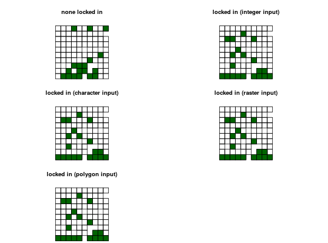

Add constraints to ensure that they are prioritized in the solution.
For example, it may be desirable to lock in planning units that are
inside existing protected areas so that the solution fills in the gaps in the
existing reserve network. If specific planning units should be locked out
of a solution, use add_locked_out_constraints.
add_locked_in_constraints(x, locked_in)
| x |
|
|---|---|
| locked_in | Object that determines which planning units that should be locked in. See details for more information. |
ConservationProblem-class object.
The locked in planning units can be specified in several different ways:
integervector of indices pertaining to which
planning units should be locked in.
charactercolumn name in the attribute table values
indicating if planning units should be locked in. This option is
only available if the planning units in x are a
Spatial-class object. The column in the attribute
table should have logical (ie. TRUE or FALSE)
values indicating if the planning unit is to be locked in.
Raster-class objectplanning units in x
that intersect with cells in y are locked in. Specifically,
only if the intersect with cells in y are that are not equal to
zero or NA.
Spatial-class object.planning units in x
that spatially intersect with locked_in are locked in.
constraints, add_locked_out_constraints, penalties.
# create basic problem p1 <- problem(sim_pu_polygons, sim_features) %>% add_min_set_objective() %>% add_relative_targets(0.2) # create problem with added locked in constraints using integers p2 <- p1 %>% add_locked_in_constraints(which(sim_pu_polygons$locked_in)) # create problem with added locked in constraints using a field name p3 <- p1 %>% add_locked_in_constraints("locked_in") # create problem with added locked in constraints using raster data p4 <- p1 %>% add_locked_in_constraints(sim_locked_in_raster) # create problem with added locked in constraints using spatial polygons data locked_in <- sim_pu_polygons[sim_pu_polygons$locked_in == 1,] p5 <- p1 %>% add_locked_in_constraints(locked_in) # solve problems s1 <- solve(p1)#> Optimize a model with 5 rows, 90 columns and 450 nonzeros #> Variable types: 0 continuous, 90 integer (90 binary) #> Coefficient statistics: #> Matrix range [2e-01, 9e-01] #> Objective range [2e+02, 2e+02] #> Bounds range [1e+00, 1e+00] #> RHS range [6e+00, 1e+01] #> Found heuristic solution: objective 4135.27 #> Presolve time: 0.00s #> Presolved: 5 rows, 90 columns, 450 nonzeros #> Variable types: 0 continuous, 90 integer (90 binary) #> Presolved: 5 rows, 90 columns, 450 nonzeros #> #> #> Root relaxation: objective 3.490348e+03, 17 iterations, 0.00 seconds #> #> Nodes | Current Node | Objective Bounds | Work #> Expl Unexpl | Obj Depth IntInf | Incumbent BestBd Gap | It/Node Time #> #> 0 0 3490.34813 0 4 4135.27447 3490.34813 15.6% - 0s #> H 0 0 3597.0951275 3490.34813 2.97% - 0s #> #> Explored 0 nodes (17 simplex iterations) in 0.01 seconds #> Thread count was 1 (of 4 available processors) #> #> Solution count 2: 3597.1 4135.27 #> Pool objective bound 3490.35 #> #> Optimal solution found (tolerance 1.00e-01) #> Best objective 3.597095127479e+03, best bound 3.490348127696e+03, gap 2.9676%#> Optimize a model with 5 rows, 90 columns and 450 nonzeros #> Variable types: 0 continuous, 90 integer (90 binary) #> Coefficient statistics: #> Matrix range [2e-01, 9e-01] #> Objective range [2e+02, 2e+02] #> Bounds range [1e+00, 1e+00] #> RHS range [6e+00, 1e+01] #> Found heuristic solution: objective 4020.2 #> Presolve removed 0 rows and 10 columns #> Presolve time: 0.00s #> Presolved: 5 rows, 80 columns, 400 nonzeros #> Variable types: 0 continuous, 80 integer (80 binary) #> Presolved: 5 rows, 80 columns, 400 nonzeros #> #> #> Root relaxation: objective 3.620461e+03, 11 iterations, 0.00 seconds #> #> Nodes | Current Node | Objective Bounds | Work #> Expl Unexpl | Obj Depth IntInf | Incumbent BestBd Gap | It/Node Time #> #> 0 0 3620.46082 0 3 4020.20382 3620.46082 9.94% - 0s #> #> Explored 0 nodes (11 simplex iterations) in 0.01 seconds #> Thread count was 1 (of 4 available processors) #> #> Solution count 1: 4020.2 #> Pool objective bound 3620.46 #> #> Optimal solution found (tolerance 1.00e-01) #> Best objective 4.020203818008e+03, best bound 3.620460824006e+03, gap 9.9434%#> Optimize a model with 5 rows, 90 columns and 450 nonzeros #> Variable types: 0 continuous, 90 integer (90 binary) #> Coefficient statistics: #> Matrix range [2e-01, 9e-01] #> Objective range [2e+02, 2e+02] #> Bounds range [1e+00, 1e+00] #> RHS range [6e+00, 1e+01] #> Found heuristic solution: objective 4020.2 #> Presolve removed 0 rows and 10 columns #> Presolve time: 0.00s #> Presolved: 5 rows, 80 columns, 400 nonzeros #> Variable types: 0 continuous, 80 integer (80 binary) #> Presolved: 5 rows, 80 columns, 400 nonzeros #> #> #> Root relaxation: objective 3.620461e+03, 11 iterations, 0.00 seconds #> #> Nodes | Current Node | Objective Bounds | Work #> Expl Unexpl | Obj Depth IntInf | Incumbent BestBd Gap | It/Node Time #> #> 0 0 3620.46082 0 3 4020.20382 3620.46082 9.94% - 0s #> #> Explored 0 nodes (11 simplex iterations) in 0.01 seconds #> Thread count was 1 (of 4 available processors) #> #> Solution count 1: 4020.2 #> Pool objective bound 3620.46 #> #> Optimal solution found (tolerance 1.00e-01) #> Best objective 4.020203818008e+03, best bound 3.620460824006e+03, gap 9.9434%#> Optimize a model with 5 rows, 90 columns and 450 nonzeros #> Variable types: 0 continuous, 90 integer (90 binary) #> Coefficient statistics: #> Matrix range [2e-01, 9e-01] #> Objective range [2e+02, 2e+02] #> Bounds range [1e+00, 1e+00] #> RHS range [6e+00, 1e+01] #> Found heuristic solution: objective 4020.2 #> Presolve removed 0 rows and 10 columns #> Presolve time: 0.00s #> Presolved: 5 rows, 80 columns, 400 nonzeros #> Variable types: 0 continuous, 80 integer (80 binary) #> Presolved: 5 rows, 80 columns, 400 nonzeros #> #> #> Root relaxation: objective 3.620461e+03, 11 iterations, 0.00 seconds #> #> Nodes | Current Node | Objective Bounds | Work #> Expl Unexpl | Obj Depth IntInf | Incumbent BestBd Gap | It/Node Time #> #> 0 0 3620.46082 0 3 4020.20382 3620.46082 9.94% - 0s #> #> Explored 0 nodes (11 simplex iterations) in 0.01 seconds #> Thread count was 1 (of 4 available processors) #> #> Solution count 1: 4020.2 #> Pool objective bound 3620.46 #> #> Optimal solution found (tolerance 1.00e-01) #> Best objective 4.020203818008e+03, best bound 3.620460824006e+03, gap 9.9434%#> Optimize a model with 5 rows, 90 columns and 450 nonzeros #> Variable types: 0 continuous, 90 integer (90 binary) #> Coefficient statistics: #> Matrix range [2e-01, 9e-01] #> Objective range [2e+02, 2e+02] #> Bounds range [1e+00, 1e+00] #> RHS range [6e+00, 1e+01] #> Found heuristic solution: objective 4020.2 #> Presolve removed 0 rows and 10 columns #> Presolve time: 0.00s #> Presolved: 5 rows, 80 columns, 400 nonzeros #> Variable types: 0 continuous, 80 integer (80 binary) #> Presolved: 5 rows, 80 columns, 400 nonzeros #> #> #> Root relaxation: objective 3.620461e+03, 11 iterations, 0.00 seconds #> #> Nodes | Current Node | Objective Bounds | Work #> Expl Unexpl | Obj Depth IntInf | Incumbent BestBd Gap | It/Node Time #> #> 0 0 3620.46082 0 3 4020.20382 3620.46082 9.94% - 0s #> #> Explored 0 nodes (11 simplex iterations) in 0.01 seconds #> Thread count was 1 (of 4 available processors) #> #> Solution count 1: 4020.2 #> Pool objective bound 3620.46 #> #> Optimal solution found (tolerance 1.00e-01) #> Best objective 4.020203818008e+03, best bound 3.620460824006e+03, gap 9.9434%# plot solutions par(mfrow=c(3,2)) plot(s1, main="none locked in") plot(s1[s1$solution==1,], col="darkgreen", add=TRUE) plot(s2, main="locked in (integer input)") plot(s2[s2$solution==1,], col="darkgreen", add=TRUE) plot(s3, main="locked in (character input)") plot(s3[s3$solution==1,], col="darkgreen", add=TRUE) plot(s4, main="locked in (raster input)") plot(s4[s4$solution==1,], col="darkgreen", add=TRUE) plot(s5, main="locked in (polygon input)") plot(s5[s5$solution==1,], col="darkgreen", add=TRUE)